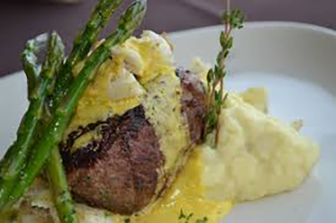

Schultz Steak Sauce
Mrs. Clark's Bernaise Sauce Recipe
Susan Clark, Olympia, WA
Recipe Photo

Image source: pxhere
Ingredients
- 2 egg yolks
- 1 stick of butter (1/2 cup)
- 2 T tarragon vinegar
- 1 t salt
Directions
- Heat butter in sauce pan until slightly hot.
- Pour egg yolks into blender.
- Add tarragon vinegar and salt.
- Cover blender and turn to low speed.
- Drizzle in butter slowly while covering with paper towel.
- Serve sauce with steak and vegetables.